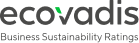
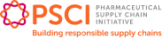
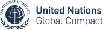
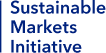

Sustainable Future
지속가능한 미래를 위한 약속
“더 건강한 세상, 지속가능한 미래를 위해 삼성바이오로직스는 `모든 비즈니스 의사
결정에서 지속가능성을 고려하며 친환경 행보에 앞장섭니다.”
“더 건강한 세상, 지속가능한 미래를 위해 삼성바이오로직스는 `모든 비즈니스 의사
결정에서 지속가능성을 고려하며 친환경 행보에 앞장섭니다.”
Environmental
Responsibility
Social
Responsibility
Coporate
Responsibility
삼성바이오로직스는 제약 및 헬스케어 산업 전반에 걸쳐 정책 수립과 긍정적인 변화를 이끌기 위한 글로벌 이니셔티브에 적극 참여하고 있습니다. Sustainable Markets Initiative 산하 Health Systems Taskforce의 일원으로서, 삼성바이오로직스는 공급망 개선을 위한 글로벌 협력을 주도하며 탄소중립 실현과 환자 중심의 헬스케어 도입을 가속화하고 있습니다.
Terra Carta Seal
2022 Terra Carta Seal 획득
'25년 수자원 관리 부문 A 등급 및 기후변화 부문 B 등급 획득
'25년, MSCI ESG평가 BBB 등급 획득

'26년, EcoVadis Platinum 등급 획득
다우존스 지속가능경영 월드 지수 5년 연속 편입
'25년, 한국ESG기준원 통합 A

글로벌 바이오·제약 공급망 지속 가능성 이니셔티브 '24년 7월, 한국 CDMO 산업 최초 가입
TCFD 지지선언 ('22년 7월) & 첫 번째 TCFD 보고서 발간 ('22년 12월)
'22년 11월, RE100 가입
지속가능발전목표 지지 선언 (Sustainable Development Goals)

'23년 6월, 유엔 글로벌 콤팩트(UN Global Compact, UNGC) 가입

영국 왕실 주도 기후변화 대응 이니셔티브